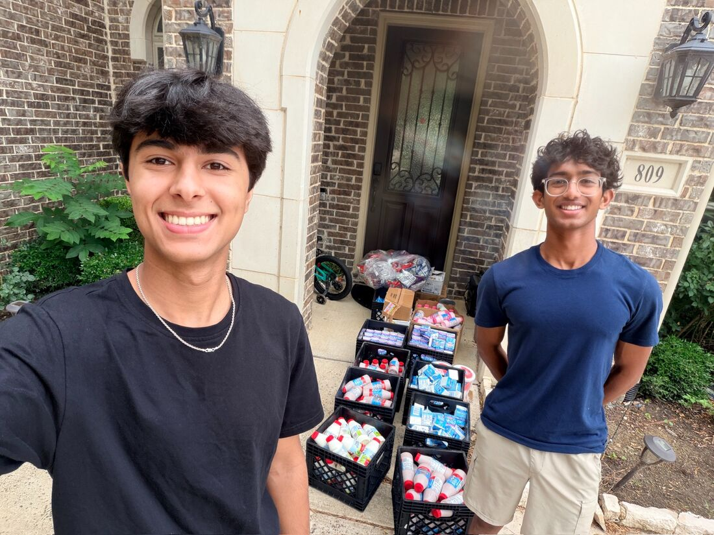
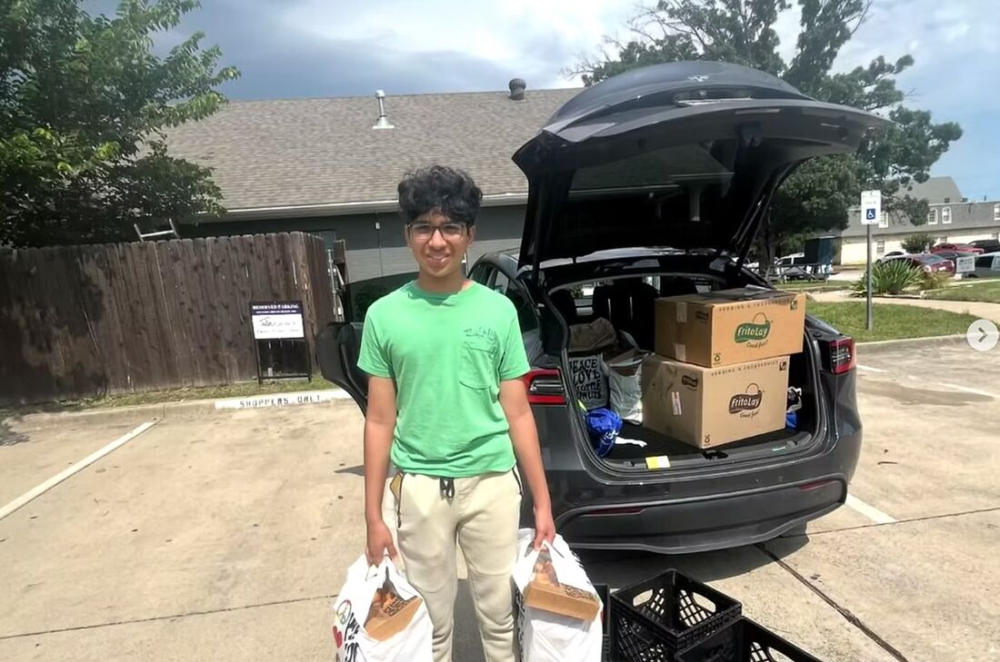
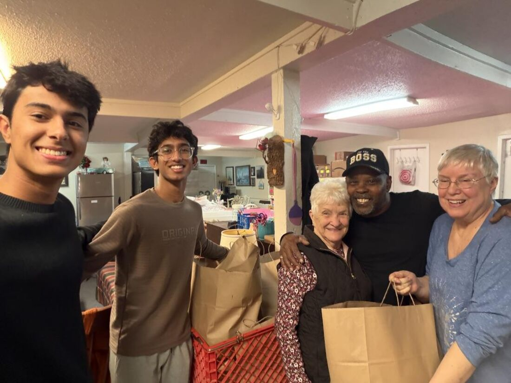

Rescuing good food.
Feeding our community.
Plates to Purpose is a youth-led 501(c)(3) nonprofit dedicated to reducing food waste and food insecurity at the same time.

A student-led movement against food waste and hunger
Youth-led student chapters
Every chapter is founded and run by students who coordinate food pickups, manage deliveries, and build local partnerships — proving age is no barrier to impact.
Community-based
We work where we live, partnering with neighborhood restaurants, schools, and businesses to move surplus food to the pantries and shelters serving our own neighbors.
Raising awareness
Through donation drives, community events, school initiatives, and social media campaigns, we spotlight food waste, hunger, and sustainability.
Follow the food
By connecting food donors, volunteers, and receiving organizations, we create a more efficient system where excess food is redirected with purpose instead of wasted.
Surplus food is donated
Restaurants, schools, cafeterias, bakeries, and businesses donate safe surplus food that would otherwise go to landfills.

Student volunteers move it
Our student-led chapters mobilize volunteers to coordinate food pickups, manage deliveries, and build partnerships with organizations serving food-insecure communities.

Meals reach people in need
Pantries, shelters, and community centers distribute rescued food to the families and neighbors they serve.

There’s a place for you at the table
Volunteers
Help us rescue, transport, and distribute surplus food while supporting local hunger relief efforts.
Food Donors
Restaurants, schools, cafeterias, bakeries, and businesses can donate safe surplus food instead of letting it go to waste.
Receiving Organizations
Pantries, shelters, schools, and community centers can partner with us to receive rescued food for the communities they serve.
Donate
Support our mission by helping fund transportation, food safety supplies, outreach, and chapter growth.